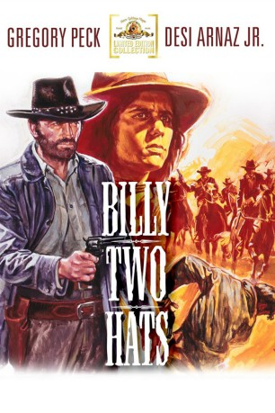

#3322 Begrabt die Wölfe in der Schlucht
Alternativ: Billy Two Hats
 
 IMDB-Wertung: 6.3 / 10
IMDB-Wertung: 6.3 / 10  Metascore: 0
Metascore: 0 
Nach einem Banküberfall wird der Halbindianer Billy (Desi Arnaz Jr.) festgenommen. Bevor er der Justiz übergeben wird, befreit ihn sein Partner, der berüchtigte Outlaw Deans (Gregory Peck). Die beiden flüchten durch die Wüste Richtung Mexiko. Doch Sheriff Gifford (Jack Warden) ist ihnen dicht auf den Fersen.
Jahr: 1974
Dauer: 95 Minuten
FSK: 16
Land: USA Studio: United ArtistsTonspuren: DD2.0 - ,
Untertitel:
Auflösung: 1080p (1920x1080) Größe: 8222 MB
Genre: Western, Liebe
Regisseur: Ted Kotcheff
Drehbuch: Alan Sharp
Soundtrack: John Scott
Darsteller:
 Gregory Peck als Arch Deans
Gregory Peck als Arch Deans- Desi Arnaz Jr. als Billy Two Hats
 Jack Warden als Sheriff Henry Gifford
Jack Warden als Sheriff Henry Gifford David Huddleston als Copeland, Saloon Owner
David Huddleston als Copeland, Saloon Owner- Sian Barbara Allen als Esther Spencer
- John Pearce als Spencer
- Dawn Little Sky als Copeland's Squaw
- Vince St. Cyr als Indian Leader
- Henry Medicine Hat als Indian
- Zeev Berlinsky als Indian
- Antony Scott als Indian
Datei: X:\HD-Western-1960-1979\Begrabt die Wölfe in der Schlucht (1974, FSK16, 1920x1080).mkv seit 11.03.2016
Festplatte: HD Eastern+Western
 Es gibt insgesamt 110 Filme in der Gruppe 'HD-Western-1960-1979'
Es gibt insgesamt 110 Filme in der Gruppe 'HD-Western-1960-1979'